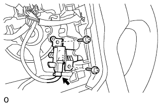
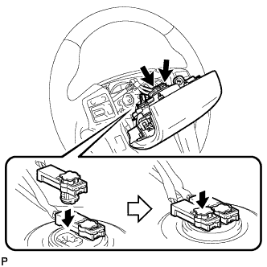
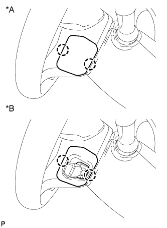

ГЛАВНЫЙ ВЫКЛЮЧАТЕЛЬ КРУИЗ-КОНТРОЛЯ > УСТАНОВКА |
| 1. УСТАНОВИТЕ ГЛАВНЫЙ ВЫКЛЮЧАТЕЛЬ КРУИЗ-КОНТРОЛЯ |
|  |
Установите переключатель и закрепите его 2 винтами.
Подсоедините разъем.
| 2. УСТАНОВИТЕ НАКЛАДКУ РУЛЕВОГО КОЛЕСА |
|  |
Одной рукой придерживайте накладку рулевого колеса.
Подсоедините 2 разъема к накладке рулевого колеса.
Подсоедините разъем звукового сигнала.
Проверьте, что канавка по окружности винта "TORX" вошла в корпус с резьбой, и поместите накладку рулевого колеса на рулевое колесо.
Затяните 2 винта с помощью торцевого ключа "TORX" (T30).
| 3. УСТАНОВИТЕ НИЖНЮЮ КРЫШКУ РУЛЕВОГО КОЛЕСА № 2 |
|  |
Введите в зацепление 2 захвата, чтобы установить крышку.
| *A | Для моделей без системы круиз-контроля |
| *B | Для моделей с системой круиз-контроля |
| 4. УСТАНОВИТЕ НИЖНЮЮ КРЫШКУ РУЛЕВОГО КОЛЕСА № 3 |
Введите в зацепление 2 захвата, чтобы установить крышку.
| 5. ПОДСОЕДИНИТЕ ПРОВОД К ОТРИЦАТЕЛЬНОМУ ВЫВОДУ АККУМУЛЯТОРНОЙ БАТАРЕИ |
| 6. ПРОВЕРЬТЕ КОНТРОЛЬНУЮ ЛАМПУ АВАРИЙНОГО СОСТОЯНИЯ SRS |
Проверьте контрольную лампу аварийного состояния SRS (Нажмите здесь).